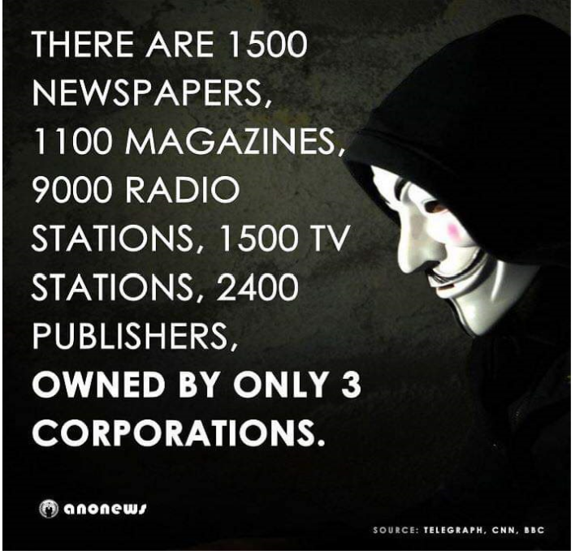
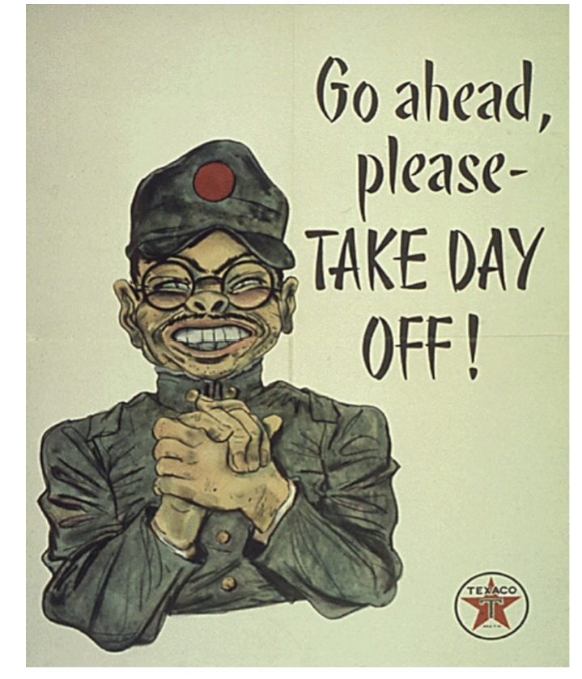
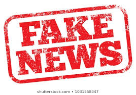

PROPAGANDA IN SOCIETY
CONTENT:
WHAT IS SOCIAL ISSUE?
A social issue is a problem that influences many individuals within a society. It's a common problem we see happening in our society. A social issue can be considered as a problem that influences many people and many people strive to solve the issue. It is often the consequence of factors the source of a conflicting opinion on the grounds of what is perceived as morally correct or incorrect personal life.
TYPES:
INTRODUCTION OF PROPAGANDA
|  |
Propaganda is an information that is used primarily to influence an audience and further an agenda, which may not be objective and may be presenting facts selectively to encourage a particular synthesis or perception, or using loaded language to produce an emotional rather than a rational response to the information that is presented. Propaganda is often associated with material prepared by governments, but activist groups, companies, religious organizations, the media, and individuals can also produce propaganda.
TYPES OF PROPAGANDA:
More in line with the religious roots of the term, propaganda is also used widely in the debates about new religious movement (NRMs), both by people who defend them and by people who oppose them. The latter pejoratively call these NRMs cults. Anti-cult activists accuse the leaders of what they consider cults of using propaganda extensively to recruit followers and keep them. Some social scientists, such as the late Jeffrey Hidden, and CESNUR affiliated scholars accuse ex-members of "cults" and the anti-cult movement of making these unusual religious movements look bad without sufficient reasons.
Propaganda is a powerful weapon in war; it is used to dehumanize and create hatred toward a supposed enemy, either internal or external, by creating a false image in the mind of soldiers and citizens. This can be done by using derogatory or racist terms (e.g., the racist terms "Jap" and "gook" used during World War II and the Vietnam War , respectively), avoiding some words or language or by making allegations of enemy atrocities. Most propaganda efforts in wartime require the home population to feel the enemy has inflicted an injustice, which may be fictitious or may be based on facts (e.g., the sinking of the passenger ship RMS Lusitania by the German Navy in World War I).
|  |
Propaganda shares techniques with advertising and public relations , each of which can be thought of as propaganda that promotes a commercial product or shapes the perception of an organization, person, or brand.
Journalistic theory generally holds that news items should be objective, giving the reader an accurate background and analysis of the subject at hand. On the other hand, advertisements evolved from the traditional commercial advertisements to include also a new type in the form of paid articles or broadcasts disguised as news. These generally present an issue in a very subjective and often misleading light, primarily meant to persuade rather than inform.
Propaganda has become more common in political contexts, in particular to refer to certain efforts sponsored by governments, political groups, but also often covert interests. In the early 20th century, propaganda was exemplified in the form of party slogans. Propaganda also has much in common with public information campaigns by governments, which are intended to encourage or discourage certain forms of behaviour (such as wearing seat belts, not smoking, not littering and so forth). Again, the emphasis is more political in propaganda. Propaganda can take the form of leaflets , posters, TV and radio broadcasts and can also extend to any other medium
ISSUES/PROBLEMS:
A large majority of studies covered western countries, while Muslim countries and Muslim media have been neglected. We also identified an evident lack of comparative research, a neglect of visuals and a dearth of research on online media. We found that most studies investigated the themes of migration, terrorism and war. More over our meta study shows that Muslims tend to be negatively framed, while Islam is dominantly portrayed as a violent religion.
Due to fake news and a storm of propagandas, most of the criminals are becoming stronger. By taking the advantage of money, most of the criminals buy the social media and T.V channels and then they spread fake news about cases and incidents. This issue of propaganda is now very common and the peace of the society are now in danger.
brainwashing is such an invasive form of influence, it requires the complete isolation and dependency of the subject, which is why you mostly hear of brainwashing occurring in prison camps or . The agent (the brainwasher) must have complete control over the target (the brainwashed) so that sleep patterns, eating, using the bathroom and the fulfilment of other basic human needs depend on the will of the agent. In the brainwashing process, the agent systematically breaks down the target's identity to the point that it doesn't work anymore. The agent then replaces it with another set of behaviours, attitudes and beliefs that work in the target's current environment.
Propaganda covered the main issues of society. From propaganda media shows the positive and incomplete picture of society,thats why the main issues are not highlighted such as pollution and poverty.Propanganda is controlled by the politics so every politician blame other’s progress in the society but no one tested his own progress by observe the society.
SOLUTION:
If we convey the true image of Islam through social media, then this problem will definitely solved. People should teach that Islam is the religion of peace, gives equal rights to men and women and teaches that how to spend a life.
If we give correct information about case and incidents then the criminals will punished and the people feel peaceful in society. This can be done by social media, which is bought by criminals. So it is very tough to collect correct knowledge about any case but not impossible.
The only way to get rid of from brain wash is not to believe more rapidly in any news from social media. Read the whole situation and be a knowledgeable person. Never trust anyone which is very dangerous for society and don’t be a lazy guy for getting a huge amount of any kind of knowledge.
Many countries are highlighted their main issues and also working on it. So we should also look after the main issues of doctors ,engineers ,poor people and many others. We should take advise of every one and never trust any fake news which hide the problems and issues of society.
IMPACT OF PROPAGANDA
Propaganda can influence people to believe a certain ideology whether that ideology is right or wrong. Propaganda is used as a weapon. Every one is became a target of propaganda. Millions of dollars are wasted because of fake news .Every one is thinking that Islam is the religion of terrorism. Criminals are save and innocent people
|  /> |
are in danger.
REFRENCES:
CONCLUSION:
In conclusion, propaganda is a disease and no matter what you do, it will always change you in some way. Think about it ,all the advertisement work together to make up a type of influence. It spreads one person to another person like a virus and sometime it becomes unstoppable. So we should aware from fake news and be a knowledgeable person.